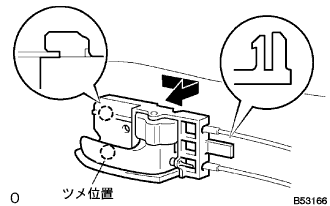
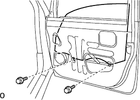
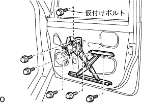
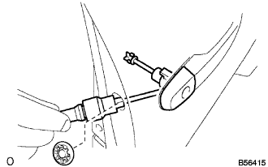
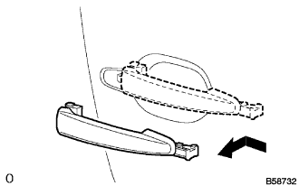
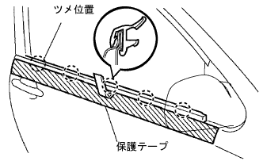
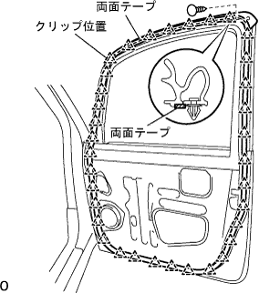

フロントドアRH 分解 |
| 1. マルチプレックス ネットワーク マスタ スイッチASSY取りはずし |
 |
保護テープを貼ったマイナスドライバーを使用して、ツメのかん合をはずす。
コネクタを切り離し、マルチプレツクス ネツトワーク マスタ スイツチASSYを取りはずす。
| 2. フロントドアロワーフレームブラケット ガーニッシュ RH取りはずし |
手でクリップ(上部）のかん合をはずす。
 |
手で持ち上げながらツメ(下部)のかん合をはずし、フロントドアフロントロワーフレームブラケツトガーニツシユRHを取りはずす。
| 3. ドア プルハンドル取りはずし |
スクリューをはずし、ドアプルハンドルを取りはずす。
| 4. フロントドアトリム ボードSUB-ASSY RH取りはずし |
 |
スクリューを取りはずす。
プラスドライバーを使用してクリップの中央部を９０°回転させ、クリップを取りはずす。
トリムボードを車両内側に手で引きながら保護テープを貼ったマイナスドライバーを使用して図の9箇所のクリップのかん合をはずす。
フロントドアトリムボードRHを引き上げて取りはずす。
| 5. フロントドアガラス ウエザストリップ INN RH取りはずし |
ツメをはずし、フロントドア トリムボード RHからフロントドア ガラス ウェザストリップ INN RHを取りはずす。
| 6. フロントドアインサイド ハンドルSUB-ASSY RH取りはずし |
フロントドアインサイドハンドルRH後部のツメのかん合をはずす。
フロントドアインサイドハンドルRHを後方に引いて前部のツメのかん合をはずす。
|  |
ケーブルを切り離し、フロントドアインサイドハンドルＲＨを取りはずす。
| 7. フロントドアトリム ブラケット NO.1取りはずし |
スクリュー2本をはずし、フロントドアトリムブラケツトを取りはずす。
| 8. ドアエレクトリカルキー オシレータ取りはずし（スマートドアロックあり） |
スクリュー2本を取りはずす。
コネクタを切り離し、ドアエレクトリカルオキシレータキーを取りはずす。
| 9. フロントドアサービスホール カバー RH取りはずし |
| 10. フロントドアスティフナ クッション NO.1取りはずし |
クリップ2個のかん合をはずし、フロントドア スチフナ コーション No.1をとりはずす。
| 11. フロントドア ガラスSUB-ASSY RH取りはずし |
レギユレータマスタスイッチを接続し、ドアガラスを図の位置(取り付けボルトが見える位置)まで動かす。
|  |
ボルト2本をはずし、フロントドアガラスRHを取りはずす。
| 12. フロントドアウインドウ レギュレータSUB-ASSY RH取りはずし |
コネクタを切り離す。
|  |
仮付けボルトをゆるめる。
ボルト5本をはずし、フロントドアウインドウレギユレータRHを取りはずす。
仮付けボルトをレギユレータから取りはずす。
| 13. パワーウインドウレギュレータ モータASSY RH取りはずし |
トルクスドライバー(T25)を使用してスクリュー３本をはずし、パワーウインドウレギユレータモータASSY RHを取りはずす。
| 14. フロントドアガラス ラン RH取りはずし |
| 15. フロントドア フレームSUB-ASSY FR LWR RH取りはずし |
ボルトを取りはずす。
フロントドアフレームFR LWR RHを下方に引き抜き取りはずす。
| 16. フロントドア フレームSUB-ASSY RR LWR RH取りはずし |
ボルトを取りはずす。
フロントドアフレームRR LWR RHを下方に引き抜き取りはずす。
| 17. フロントドア ロックASSY RH(モータ ツキ)取りはずし |
コネクタを切り離す。
トルクスソケットレンチ(T30)を使用してスクリュー３本をはずし、フロントドアモータツキロックASSY RHを取りはずす。
| 18. フロントドアアウトサイドハンドル カバー RH取りはずし |
プラグホールを取りはずす。
|  |
トルクスソケットレンチ(T30)を使用してスクリューをゆるめ、フロントドアアウトサイドハンドルカバーをキーシリンダーと共にドアパネルから取りはずす。
| 19. フロントドア アウトサイド ハンドルASSY RH取りはずし |
コネクタを切り離す。(スマートドアロックあり)
アウトサイドハンドルを車両後方へ引き、アウトサイドハンドルフレームのかん合をはずす。
アウトサイドハンドルを車両外側に引き、アウトサイドハンドルフレームより取りはずす。
|  |
フロントドアアウトサイドハンドルパッドFRおよびフロントドアアウトサイドハンドルパツドRRを取りはずす。
| 20. フロントドアアウトサイドハンドル フレームSUB-ASSY RH取りはずし |
スマートサブワイヤのコネクタクランプ、ハーネスクランプ2箇所をインナーパネルからはずす。(スマートドアロック付き車)
トルクスソケットレンチ（Ｔ30）を使用してスクリューをはずし、フロントドアアウトサイドハンドルフレームRHを取りはずす。
| 21. フロントドア ウインドウ フレーム モールディング RR RH取りはずし |
 |
フロントドアパネルに保護テープを貼る。
アクリルフォームテープの接合部およびクリップ４箇所のかん合をはずし、フロントドア ウインドウ フレーム モールディング RR RHを取りはずす。
| 22. フロントドア ウインドウ フレーム モールディング FR RH取りはずし |
 |
フロントドアパネルに保護テープを貼る
アクリルフォームテープの接合部およびクリップ2箇所のかん合をはずし、フロントドア ウインドウ フレーム モールディング FR RHを上方に引き抜きながら取りはずす。
| 23. アウタリヤビューミラーASSY RH取りはずし |
スクリュー3本を取りはずす。
コネクタを切り離し、アウタリヤビューミラーASSY RHを取りはずす。
| 24. フロントドアガラス ウエザストリップASSY OUT RH取りはずし |
|  |
ウエザストリツプに沿ってドアパネル側に保護テープを貼る。
ルーフモールディングリムーバを使用して、ツメのかん合をはずし、フロントドアガラスウエザストリツプASSY OUT RHを取りはずす。
| 25. フロントドア ウエザストリップ RH取りはずし |
クリップリムーバーを使用してクリップのかん合をはずす。
|  |
両面テープの接着部をはがしながらフロントドアウエザストリツプRHを取りはずす。